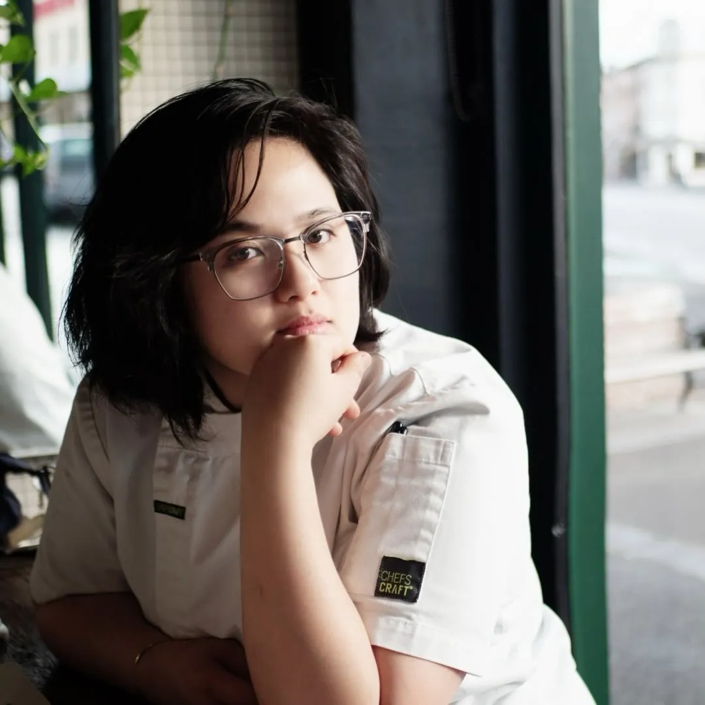

A thoughtful conversation between cultures.
Private dining, wilderness feasts and events across Melbourne and Victoria. Seasonal Australian produce, rooted in Asian heritage.
Australian Terroir × Asian Heritage
Cubo takes its name from the kubo, the simple Filipino hut where people gather, close to nature. We cook with what the Australian land offers each season, rooted in the flavours, techniques and traditions of Asia. Not a fusion, but a meeting of cultures.
Our storySeasonal & Local
Working with Australian producers, foraging and what the land offers.
Asian Heritage
Techniques, flavours, stories and traditions.
Nature & Culture
A deep respect for origin, people and place.
No Waste
Through fermentation, preservation and time-honoured methods.
Dinners, feasts & events
From intimate dinners to larger gatherings, tailored to your occasion.


The most memorable meals are not simply tasted — they are experienced, shared, and carried with us long after the final bite.

Meet Michelle
Chef & Owner
Michelle is the chef behind Cubo, guided by a simple belief: that food brings us closer to nature, culture and one another. With nearly 15 years in kitchens from five-star hotels to hatted restaurants, she cooks where Australian produce and Asian heritage meet, led by the season and shaped by fire.
Michelle’s storyVenues, farms, wineries & makers
Cubo works with venues, producers, accommodation providers, artists and other culinary creatives, and with hospitality teams that want a chef’s eye on their kitchen.
Partnerships
Winery and farm dinners, glamping experiences, pop-ups, festivals and brand collaborations, shaped together with you.
Consulting
Concept and menu development, kitchen operations, systems and training for restaurants and hospitality teams.
Let’s gather around the table.
Tell us about your occasion, your guests and the season. We’ll shape something around it.
Plan your gathering